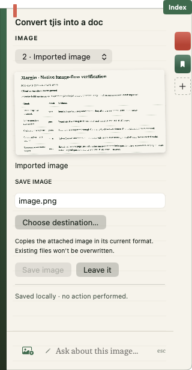

Image save · preview and validation
2026-09-14T01:59:41.412376+00:00
Build passed · 10/10 filesystem checks passed.
Debug validation build succeeded and is running; installed bundle unchanged

Native verification
- Editable image-save preview renders with filename and destination; Save disabled until destination selected.
- Document conversion request returns immediate unsupported explanation; no model loaded.
- User image page preserved across validation-build restart.
Limits
- Image save is an imported-byte copy, not document conversion.
- Native export confirmation and model-generated filename not exercised in this turn; filesystem operations tested in real temporary granted folders.
- Document conversion not implemented.
Raw timestamped results